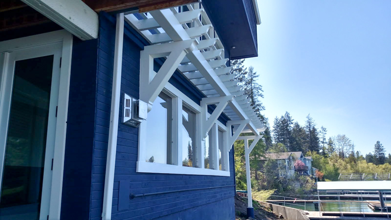
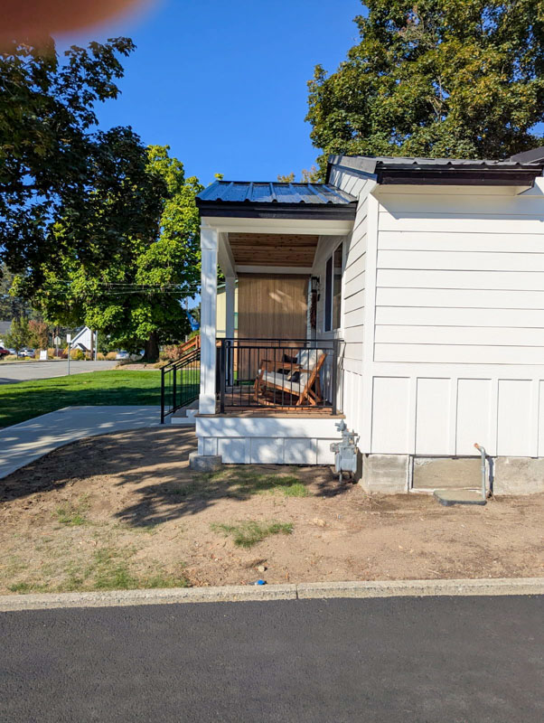

Family-owned General Contractor
Today's homes need more than great finishes. They need smart, practical technology that actually works. Kile Construction offers security camera installation and home networking services in Coeur d'Alene and nearby areas, helping homeowners improve visibility, connectivity, and convenience with clean, professional installation.

A lot of homeowners want security cameras, better Wi-Fi, cleaner TV setups, or Ethernet run through the house, but they do not want to deal with the headache of figuring it out alone. We help with the physical side of these upgrades so your system is installed neatly, positioned correctly, and set up for everyday use.
Whether you want cameras around entry points, driveways, garages, or outdoor areas, we can help install a practical system that gives you better awareness and peace of mind. If you already purchased cameras, we may still be able to help with the installation.
Strong Wi-Fi is not always enough. In many homes, hardwired Ethernet connections offer better speed, better reliability, and cleaner performance for work, streaming, cameras, and smart home devices. We can help run Ethernet in the home and support more dependable connectivity where it matters most.
Many homeowners have older garage doors that still work fine but lack smart features. Adding a smart opener upgrade can give you app-based control and added convenience without replacing the whole system. This is a practical, affordable improvement that many homeowners do not realize they can add.

This is one of the things that makes Kile Construction different. We are not just a remodeling company, and we are not just a basic handyman service. We can help bridge the gap between home improvement and the technology that modern homeowners actually use.